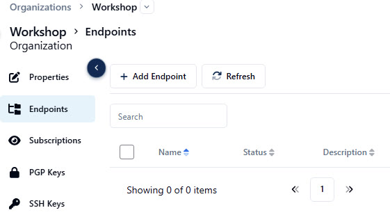
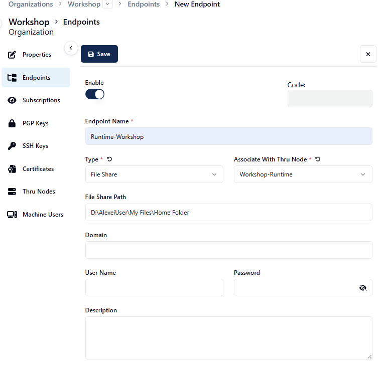
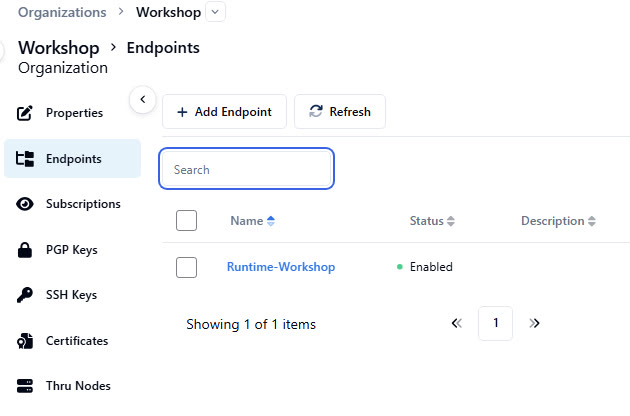

Phase 6 of 9
6
Create a File Share Endpoint
Think of the File Share Endpoint as the door to your runtime's file system — it tells Boomi MFT where the runtime's accessible folder space begins. Every flow folder path builds on top of this root.
⏰ ~4 min1
Go to your Organization and select Endpoints
Click Add Endpoint to create a new one.

2
Fill in the endpoint form
Give it a name, set Type to File Share, and set Associate With Thru Node to your node.
For the File Share Path, the path should still be on your clipboard from earlier — if not, get it again from Windows Explorer: on the left-hand side, right-click the pinned Home Folder and choose Copy as path. Paste it into the File Share Path field.
Remove the quotation marks
Copy as path wraps the result in quotation marks — strip them off after pasting. For example, the pasted value
"D:\AlexeiUser\My Files\Home Folder" should become D:\AlexeiUser\My Files\Home Folder.
3
Save and confirm
Once saved, your endpoint appears in the list as Enabled, type File Share.

One endpoint, many flows
A single File Share Endpoint can support multiple flow endpoints across different subfolders, as long as they all sit under the same root path. The endpoint is the door — the folder path you set on each flow endpoint is just which room you walk into.